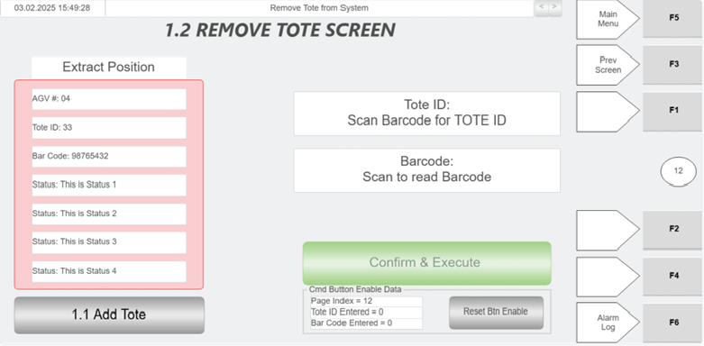

| Procedure ID | proc_remove_tote_from_system_hospital_hmi_remove_tote_v1 |
|---|---|
| Title | Remove Tote from System using Hospital HMI (Remove Tote screen) |
| Procedure Type | operation |
| Primary Role | operator |
| Support Safe | Yes |
| Capability Tags | tote_lifecycle_state |
| Access Surface | hospital_hmi |
| Audience Roles | operator |
| Failure Pattern Tags | None |
| Validation Status | needs_sme_review |
| Merge Status | source_finalized |
Use the Hospital HMI “Remove Tote” screen to scan the tote barcode into the Tote ID and Barcode fields, verify the extract-side position information from WCS (AGV#, Tote ID, Bar Code, Status), ensure the tote is positioned properly on the extract side, and then press CONFIRM & EXECUTE to remove the tote from the system.
When a station operator needs to remove a tote from the OptiSweep system at the Hospital Station so the required task can be performed.

Responsible role: operator
Instruction:
On the Hospital HMI, open the “Remove Tote” screen.
Expected result:
The Hospital HMI “Remove Tote” screen is displayed with the Tote ID field, Barcode field, CONFIRM & EXECUTE button, and the Extract Position Information panel.
Responsible role: operator
Instruction:
In the Tote ID area, use the green scanner to scan the tote bar code to populate the Tote ID field.
Expected result:
The Tote ID field is populated after scanning.
Responsible role: operator
Instruction:
In the Barcode area, press the green scanner button and then scan the tote bar code to populate the Barcode field.
Expected result:
The Barcode field is populated with the scanned information.
Responsible role: operator
Instruction:
Verify the “Extract Position Information” panel shows WCS data for the extract side, including AGV#, Tote ID, Bar Code, and Status.
Expected result:
Extract Position Information panel displays AGV# (AGV ID), Tote ID (tote ID), Bar Code (scanned information), and Status (status messages from WCS).
Stop or Escalate If:
Responsible role: operator
Instruction:
Ensure the tote is positioned properly on the extract side.
Expected result:
The tote is physically positioned properly on the extract side of the Hospital Station.
Responsible role: operator
Instruction:
Press CONFIRM & EXECUTE to remove the tote from the system.
Expected result:
The tote is removed from the system after pressing CONFIRM & EXECUTE (with the tote positioned properly on the extract side).
Stop or Escalate If:
Responsible role: operator
Instruction:
Use the “1.1 Add Tote” shortcut button only if you need to navigate to the Add Tote screen.
Expected result:
You navigate to the “Add Tote” screen only when required.